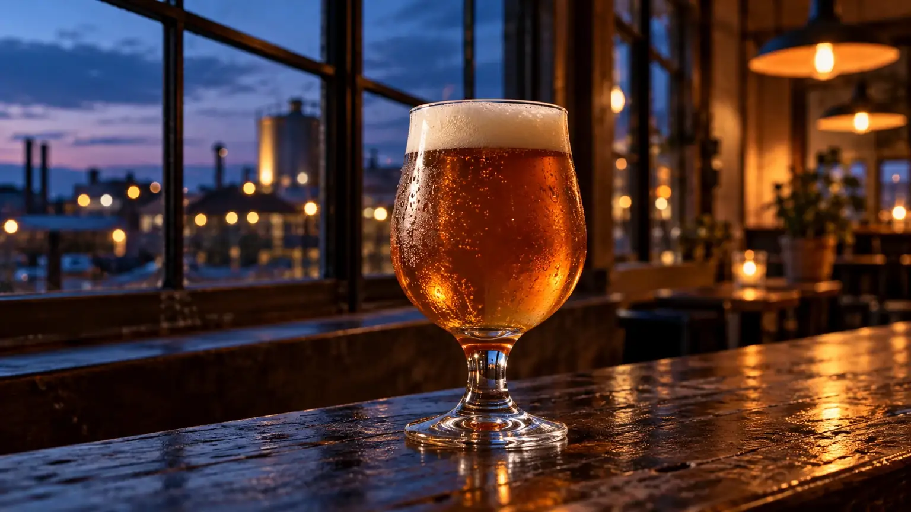
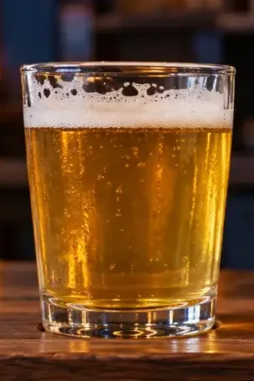
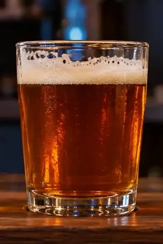
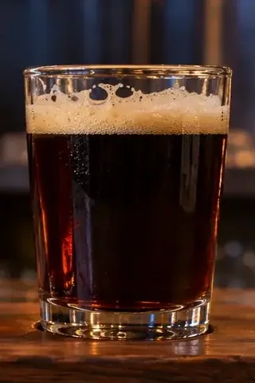
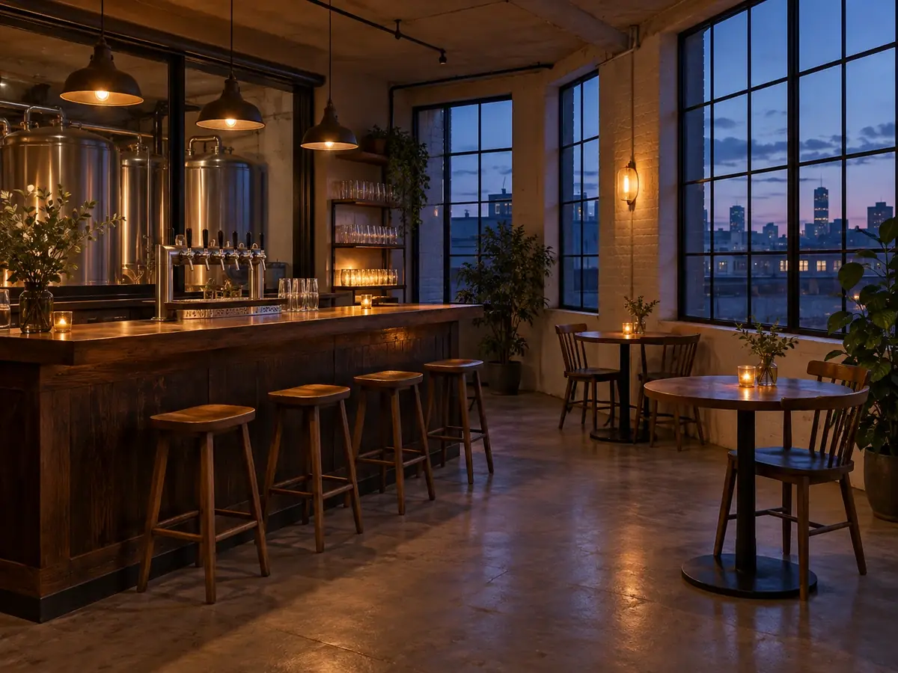
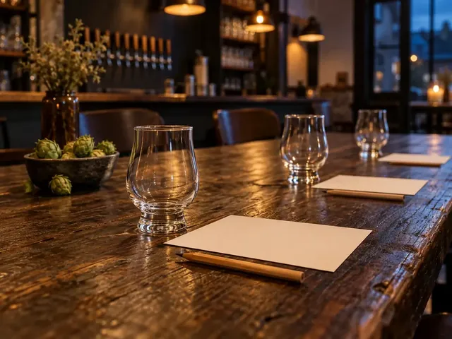
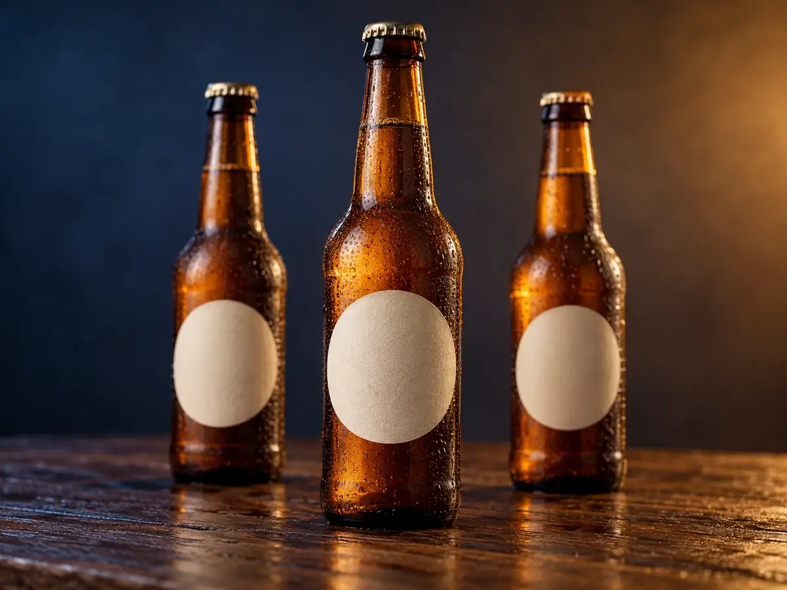

冬の号灯町のちいさな醸造所（架空）
仕事終わりの、
宵の口に。
灯町の古い倉庫を改装した、ちいさなクラフトビール醸造所です。夕暮れから夜へ移る「宵」に合う、香りの穏やかなビールを少量ずつ造っています。
20歳未満の飲酒は法律で禁止されています。お酒は適量を。
宵の目盛り名前の順に、宵が深くなります
- 1杯
- 800–900円税込・見本用の架空価格
- タップルーム
- 16:00–22:00金・土・日／予約は不要です
写真はすべてAI生成のイメージです
一今月の樽
今月、樽を開けている三つ。
香りの順に並べました。軽いものから、焙煎の香りが深いものへ。どれも小さなグラスから試せます。
はじめての方へ外がまだ明るいうちは、宵ノ口から。
-

No.01一日の終わりの、最初の一杯に。 宵ノ口よいのくち
Pale Ale柑橘の皮のような香りと、短く切れる苦味。
5.0%1杯 800円（税込）
-

No.02窓に灯りがともるころの色。 灯影ほかげ
Amber Ale焼いた麦の甘みと、カラメルのような香り。
5.5%1杯 850円（税込）
-

No.03冬のあいだだけ、樽を開けます。 夜更よふけ
Stout深く焙煎した麦の香りと、ゆっくり残るコク。
6.5%1杯 900円（税込）冬季限定
二今月の宵
灯がともるころ、
樽を開ける。
強さで驚かせるビールは造りません。まだ外が少し明るいうちに飲みはじめ、夜が深くなるまで同じ一杯を楽しめる、香りの穏やかなビールを。
醸造所の手前の一角がタップルームです。樽から直接注ぎ、その日に開けた銘柄の話を造り手から聞けます。
- 定休
- 月〜木
- 瓶
- カウンターで購入できます


三今月のイベント
次に樽を開ける日。
次の土曜18:00–21:00
夜更の樽開け
冬季限定の夜更を、今季はじめて注ぎます。造り手が焙煎の話をします。
翌月の第2土曜14:00–15:00
醸造所の見学
仕込み場と発酵タンクを、造り手の案内で見て回ります（約60分）。定員8名・参加費1,000円（税込・試飲1杯つき）。
季節の限定次は春。名前とラベルは、最初の樽を開ける日に決めます。
イベントはすべて架空です。

四今夜の一杯
今夜の一杯を、
選びにきてください。
樽のビールはタップルームで。瓶（330ml）は、タップルームと通信販売で買えます。
20歳未満の飲酒は法律で禁止されています。お酒は適量を。